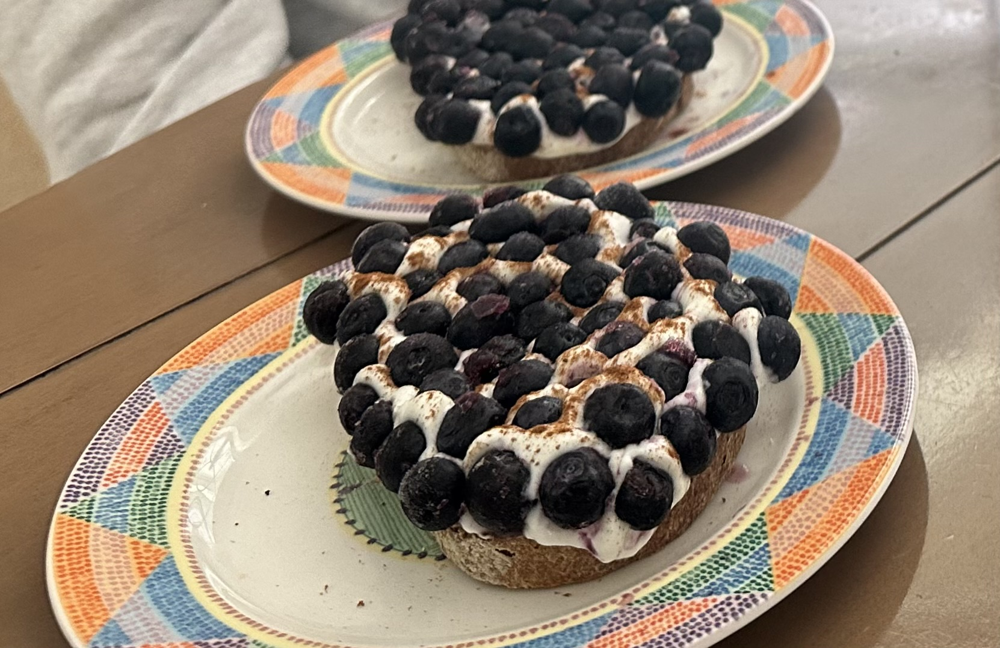

Blueberry Toast

Description
Blueberry toast is an unconventional sweet snack that's
refreshing, easy to make, customizable, and nutritious.
The thawing blueberries take center stage as they
burst in your mouth with each bite, while a layer of
thick yogurt provides a smooth, tart backdrop.
Ingredients
- Crusted bread, sliced and (optionally) toasted
- Almond butter
- Skyr yogurt
- Cinnamon
- Frozen blueberries
Steps
- Spread a layer of almond butter on each slice of bread.
- Spoon a layer of skyr onto the bread, smoothing it into an even layer roughly 1/4 inch thick.
- Sprinkle cinnamon over the yogurt layer.
- Stick frozen blueberries into the yogurt, packing them as close together as your heart desires.
The yogurt will freeze slightly and act as a glue to keep the blueberries stuck together.